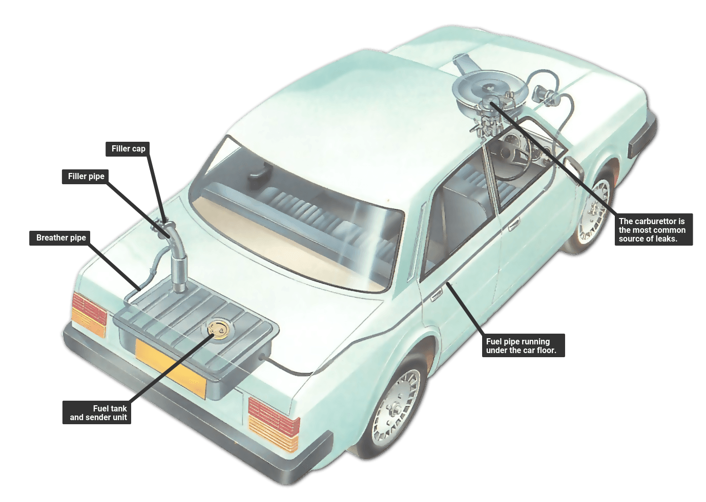

How does a fuel tank work
Fuel tanks are perhaps the most important and vital part of the car for it to properly function as it stores the fuel needed for energy. The fuel tank is normally located near the rear end of the car with the engine in the hood or near the front of the car. The way the fuel gets to the engine is through connecting fuel lines which connect to the engine and fuel pumps which get fuel out of the tank. Best case scenario is that a car actually contains multiple fuel lines and pumps to ensure the car can always get fuel to run the car. There is also a fuel filter in the process to ensure that the fuel is transferred to the engine with no debris so that it can properly process the fuel. If the fuel filter gets damaged,clogged, or dirty, it will be unable to trap contaminants and all sorts of things from entering the engine causing a lot of damage. For newer cars, the fuel filter is located in the fuel tank itself so it gets sent out already filtered.
Now about the Fuel itself
As for the fuel itself, that affects the engine much more than the fuel tank, but it still has some relevance. The most important thing when fueling a car is making sure you get the right fuel as they are not interchangeable and doing so will damage your car badly. There is regular fuel (which normally has three levels) and diesel. When putting fuel in your fuel tank, make sure you follow what the manufacturer has recommended. Remember to regularly maintain the engine to prevent deterioration as with any car component.
Let's talk about Gasoline
Gasoline is rated on an octane level. The level is a ratio of the heptane to isooctane used in the fuel. Isooctane creates a more dense fuel which causes less frequent combustions, while heptane is less dense but provides more energy. Less combustion is actually good however as this allows for more controlled combustions and prevents engine damage. Regular gasoline normally has the 3 levels of 87, 89, and 92. 87 means the fuel is 87% octane. Normally, higher octane fuel is only necessary for higher performance cars and makes no noticeable difference for the regular car making 87 the default.